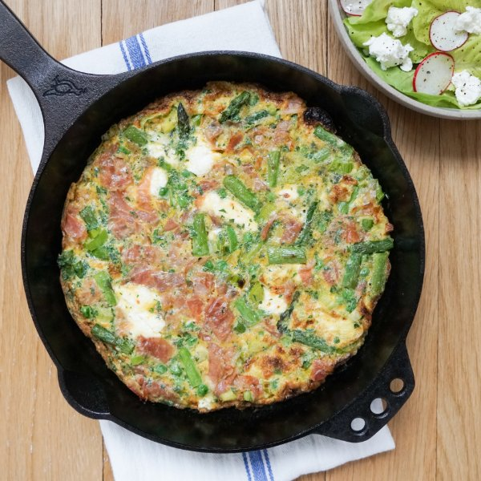

Prosciutto, Asparagus, Pea & Goat Cheese Frittata with Mixed Salad

Nutrition (per serving)
615.5 kcalCalories
42.7 gProtein
19.9 gCarbs
41.8 gFat
Full nutrition table
| Calories | 615.5 kcal |
| Total fat | 41.8 g |
| Saturated fat | 16.3 g |
| Trans fat | 0.5 g |
| Cholesterol | 546.9 mg |
| Sodium | 1255.1 mg |
| Carbohydrates | 19.9 g |
| Fiber | 5.6 g |
| Sugars | 8.1 g |
| Protein | 42.7 g |
| Potassium | 762.9 mg |
| Calcium | 253.6 mg |
| Iron | 8.4 mg |
| Vitamin A | 1178.1 IU |
| Vitamin C | 44.6 mg |
| Vitamin D | 116.7 IU |
Cookware
Ingredients
- 1 small bunchasparagus
- 1 headbutter (Boston) lettuce
- 12eggs
- 1 cupfrozen peas
- 2 (4 oz) logsgoat cheese
- 1 small bunchItalian (flat-leaf) parsley
- 2leeks
- 12 slicesprosciutto
- 1 bunchradish
- black pepper
- extra virgin olive oil
- salt
- white wine vinegar
Steps
- Wash and dry the fresh produce.1 small bunch Italian (flat-leaf) parsley
2 leeks
1 small bunch asparagus
1 bunch radish
1 head butter (Boston) lettuce - Shave parsley leaves off the stems; discard stems and mince the leaves. Place in a large bowl.
- Add eggs, pepper, and salt to the bowl with the parsley. Whisk to combine.12 eggs
½ tsp black pepper
¼ tsp salt - Crumble the goat cheese. Add half to the bowl with the egg. (Set remaining cheese aside for the salad.)2 (4 oz) logs goat cheese
- Chop (or tear) prosciutto into bite-sized pieces. Add to the bowl, stir to combine, and set aside.12 slices prosciutto
- Trim off the root ends and dark green tops of the leeks, leaving only the white and pale green parts. Cut the leeks in half lengthwise and rinse under running water, separating the layers to remove any dirt and grit. Slice crosswise into ¼-inch thick pieces. Place in a medium bowl.
- Preheat a large ovenproof skillet over medium-high heat.
- While the skillet heats up, snap (or cut) off the woody ends of the asparagus; cut spears into bite-sized pieces. Add to the bowl with the leek.
- Once the skillet is hot, add oil and swirl to coat the bottom. Add leek, asparagus, peas, pepper, and salt; cook, stirring occasionally, until veggies are bright green and starting to soften, about 3 minutes. (Reserve bowl for later use.)2 tbsp extra virgin olive oil
1 cup frozen peas
½ tsp black pepper
¼ tsp salt - Meanwhile, preheat oven to broil on high and position rack in the upper third of the oven.
- When the veggies are soft, reduce heat to medium and pour the egg mixture into the skillet. As eggs set around the edge of the skillet, gently lift cooked portions with a spatula to allow uncooked egg to flow underneath. Cook until bottom and sides are firm but top is still runny, about 5 minutes.
- While the frittata is cooking, place additional oil, vinegar, salt, and pepper in the reserved bowl. Whisk to combine the dressing and set aside.4 tsp extra virgin olive oil
2 tsp white wine vinegar
⅛ tsp salt
⅛ tsp black pepper - Place skillet in the oven and broil until top of the frittata is just set, 2-3 minutes. Remove from oven.
- Meanwhile, trim and thinly slice radishes. Add to the bowl with the dressing.
- Separate lettuce into leaves. Chop (or tear) leaves into bite-sized pieces. Add to the bowl, along with the reserved goat cheese, and toss to combine the salad.
- Cut frittata into wedges and divide between plates. Serve with salad on the side and enjoy!